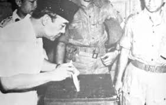
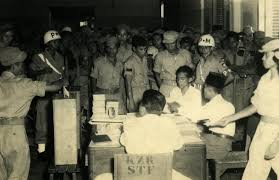

Latar Belakang — Mengapa Pemilu 1955 Terjadi?
Setelah proklamasi kemerdekaan (1945) dan masa revolusi, Indonesia membutuhkan landasan
politik yang stabil. UUDS 1950 diterapkan sebagai dasar sementara, namun seringnya pergantian kabinet,
banyaknya partai politik, dan belum ada pemilihan umum nasional mendorong pemerintah mengadakan pemilu untuk
mewujudkan kedaulatan rakyat secara langsung.
Siapa yang menginisiasi dan menyelenggarakan?
Pemilu diinisiasi pada masa kabinet Ali Sastroamidjojo I (PNI). Penyelenggaraan dikoordinasikan oleh
Panitia Pemilihan Indonesia (PPI) dengan panitia daerah di setiap provinsi dan kabupaten. Tujuan utama:
memilih DPR dan Konstituante secara langsung, umum, bebas, dan rahasia.
Proses & Pelaksanaan
Pemilu 1955 dilaksanakan dalam dua tahap: 29 September 1955 untuk DPR dan 15 Desember
1955 untuk Konstituante. Sistem yang digunakan adalah perwakilan proporsional (16 distrik multi-anggota)
dengan metode quota Hare + largest remainder.
- Jumlah kursi DPR: 257
- Jumlah anggota Konstituante: 514
- Partisipasi pemilih: ~91% (sekitar 39 juta terdaftar)
- Banyak partai yang ikut — tetapi hanya beberapa partai besar mendominasi suara

Kotak suara & surat suara saat Pemilu 1955
Hasil Pemilu & Analisis Partai
Empat partai besar yang memperoleh suara terbanyak: PNI, Masyumi, NU, dan PKI. Namun
tidak ada satu partai pun yang meraih mayoritas, sehingga pemerintahan menjadi rentan pada pergantian
kabinet dan kebuntuan politik.
| Partai |
Kursi DPR |
% Suara (perkiraan) |
| PNI |
57 |
~22.3% |
| Masyumi |
57 |
~20.9% |
| NU |
45 |
~18.4% |
| PKI |
39 |
~16.4% |
| Lainnya |
59 |
~22% |
Hasil Konstituante (singkat)
Konstituante memilih 514 anggota. Perdebatan ideologis antara kelompok sekuler, muslim, dan kiri membuat
proses penyusunan UUD baru menjadi buntu.
Dampak & Apa yang Terjadi Setelahnya
Walaupun pemilu berjalan dengan jujur dan antusias, kebuntuan politik di Konstituante dan
seringnya pergantian kabinet memberi jalan pada keputusan kuat pusat: pada 5 Juli 1959 Presiden Soekarno
mengeluarkan Dekrit Presiden yang membubarkan Konstituante dan menetapkan kembali UUD 1945 — menandai
dimulainya era Demokrasi Terpimpin.
- Kebuntuan soal dasar negara (Pancasila vs negara berdasarkan syariat Islam)
- Ketidakstabilan kabinet dan sulitnya kebijakan jangka panjang
- Perubahan sistem politik dari parlementer ke presidensial yang lebih terpusat
Fakta penting:
Pemilu 1955 sering disebut sebagai pemilu paling jujur dan partisipatif dalam sejarah
Republik Indonesia.
Galeri Arsip
Klik untuk memperbesar foto-foto arsip Pemilu 1955.




Sumber & Bacaan Lanjutan
- Wikipedia — "1955 Indonesian legislative election" & "1955 Indonesian Constitutional Assembly election".
- Britannica — History of Indonesia (post-independence overview).
- Arsip Nasional Republik Indonesia / ANTARA — foto & dokumen arsip (untuk materi cetak, gunakan arsip
primer bila diperlukan).
- Buku sejarah Indonesia (untuk tugas akademis, lampirkan kutipan buku sebagai sumber primer).